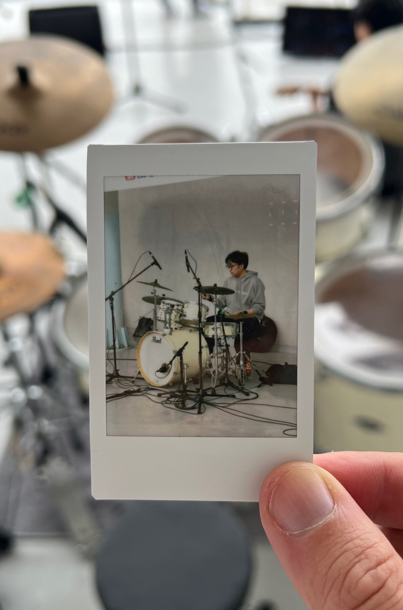

개발팀 연구원 Full Stack Engineer
헬스케어 앱·API 개발과 운영, 구독 결제, 외부 파트너 협업 프로젝트 PM, RAG·업무 에이전트 실험을 담당합니다.
- 앱스툴케어 미국 배포, 피칼스캐너 유지보수 및 경북대병원 QA 대응
- 운영한국·미국 통합 관리자 웹 개발·배포 (2026.10)
- 협업레몬헬스케어 분석 API 연동 PM (2026.09~현재)
Healthcare apps · admin tooling · partner APIs.
스툴케어·피칼스캐너 앱과 한국·미국 통합 관리자 웹을 담당하고,
외부 파트너 API 연동 프로젝트의 PM도 맡고 있습니다.
헬스케어 앱·API 개발과 운영, 구독 결제, 외부 파트너 협업 프로젝트 PM, RAG·업무 에이전트 실험을 담당합니다.
영남대 음악대학 작곡 전공, 교육대학원 음악교육과 석사를 마친 뒤 42 Gyeongsan을 거쳐 개발로 넘어왔습니다. 작곡할 때 곡 전체 구조를 먼저 보던 습관이 시스템 설계에 도움이 됩니다.
42에서는 동료에게 코드를 설명하면서 많이 배웠고, 현업에서는 리뷰 받을 때 "왜 이 방식인지" 답하다 보니 선택 근거를 챙기는 습관이 생겼습니다.

회사 프로젝트는 역할과 해결한 것 중심으로 적었어요. 사내 저장소는 공개하지 않습니다.
앱 상태 관리부터 운영용 웹까지,
실제로 쓰는 화면을 짭니다.
API와 데이터 흐름을 연결하고
기능 단위로 돌려봅니다.
배포부터 운영, 되돌아보는 것까지
서비스 수명주기를 봅니다.
문서 검색과 에이전트를 실험하고,
시스템 기본기를 다집니다.
Also used C# · .NET 8 · WPF · MVVM · epoll · CGI · MiniLibX · Readline · GDB · Ren'Py · Notion · Figma
소프트웨어 개발 교육 · C/C++, Unix, 네트워크, 동료 학습
음악교육과 석사
작곡 전공 학사
클라우드서비스 보안인증 기업담당자 교육 KSA · 8시간
생성형 AI를 활용한 블록체인 비즈니스 모델링 80시간
정보처리기사 필기 합격
UC Berkeley Leadership for Global Innovators Program 수료
개발·협업·채용 관련 문의는 아래 이메일로 보내주세요.
ruito@naver.com ↗